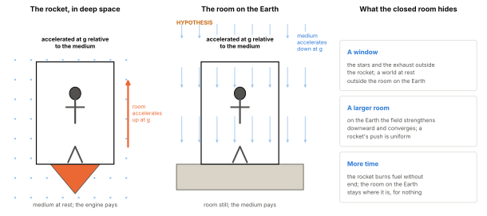
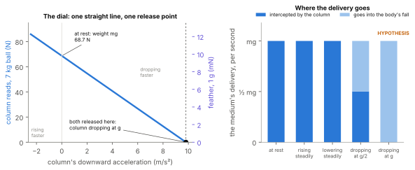
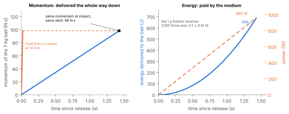
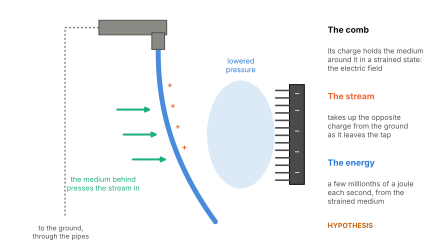
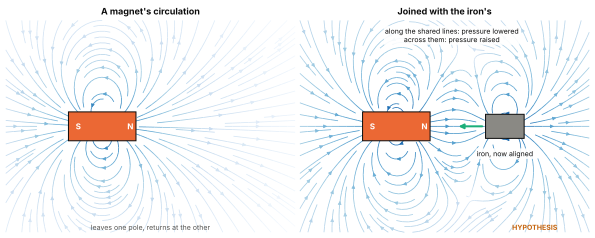

Library › The Unified Framework for the Graviton Pressure Theory
Re-examining the Four
Graviton Pressure Theory and the Return to Causal Physics
Watch the Deep Dive on this part
About This Paper
Four demonstrations are known to almost anyone who has met modern science:
Einstein’s sealed box, the thought experiment behind the equivalence principle;
the feather and the bowling ball falling together in a vacuum;
the comb that bends a stream of water;
the magnet that holds iron.
Each is taught as a confirmation: of General Relativity, of Newtonian mechanics, of electromagnetism. Each shows something real. But in each case the explanation attached to the demonstration is a separate claim from the result it shows, and the explanation often stops at a name.
This paper reads each demonstration in four steps:
what it actually shows;
the standard explanation, stated fairly, and the exact point where it stops at a name;
what Graviton Pressure Theory proposes, and whether that proposal matches what is observed;
what is still open.
The demonstrations are not proofs of the theories that claim them. They are warnings that something has been set aside: the requirement to name what carries a force, the duty to account for energy and momentum, the obligation to give mechanisms and not only matching numbers, and the courage to say “we do not yet know”.
Claims about Graviton Pressure Theory are marked by their status, as the key shows. Where an explanation is tagged by the theory it borrows from, the tags of Part 3 are used: [N] Newtonian force, [GR] geometry, [FR] frame forces, [C] contact.1
The Sealed Box
What the Box Shows
Imagine standing in a closed room with no windows. The thought experiment compares two pairs of rooms.
Weight. If the room stands on the surface of the Earth, you are pressed against the floor with your usual weight. If the same room is in deep space, far from any mass, carried forward by a rocket accelerating at 9.8 metres per second squared, you are pressed against the floor in exactly the same way. Drop a ball in either room and it falls to the floor in the same time.
Weightlessness. If the room is a lift near the Earth whose cable has been cut, falling freely, you float. If the same room is drifting in deep space with its engines off, you float in exactly the same way. Release a ball in either room and it stays where you left it.
Einstein saw in 1907 that no experiment inside such a room could tell either pair apart, and he later called it the happiest thought of his life.2
The fact behind it has been measured with extraordinary care. All bodies fall with the same acceleration, whatever they are made of. Loránd Eötvös tested it with torsion balances in the early twentieth century;3 the MICROSCOPE satellite has confirmed it to about one part in \(10^{15}\).4 On the Moon in 1971, the astronaut David Scott dropped a hammer and a falcon feather together, and they landed together.5
This is the equivalence principle, and as an observation it holds.
The Standard Reading
From the box, General Relativity draws a conclusion: gravity is not a force. A body falling freely is following its natural path, a geodesic in curved spacetime, and nothing acts on it. The person standing on the floor of the Earth room is the one being acted on. The floor pushes them off their natural path, and that push is real: it is their weight, measured by any scale [GR], [C].
Stated fairly, this reading does not deny that the standing person feels a force. It denies that gravity is the force. And it does not break the conservation of energy. The rocket needs fuel because, seen from outside, the room is gaining speed and kinetic energy every second. The room on the Earth gains none. The two rooms differ in where their energy goes, not in whether energy is conserved.
Where the Reading Stops
The conclusion rests on the box, and the box has been built to remove the evidence. The observer inside has had three things taken away.
The window.
Open a window, and every pair separates at once. The rocket shows the stars, its exhaust, and its own speed growing every second; the room on the Earth shows a world at rest. The falling lift shows the walls of the shaft rushing upward, faster every second, and a radar signal bounced off the bottom of the shaft returns with a growing Doppler shift; the room drifting in deep space shows nothing changing at all. The falling lift’s acceleration toward the Earth is real, and it is measured whenever there is a reference outside it. Only the closed room hides it.
The size.
The equivalence holds only in a small room. Over a larger one, the Earth’s field is not uniform: it strengthens by about \(3\times10^{-6}\) metres per second squared for every metre of descent, and its lines converge toward the Earth’s centre. In the room on the Earth, two balls dropped at opposite walls fall very slightly toward each other; in the rocket they fall exactly parallel. In the falling lift, two floating balls drift very slowly together side to side and apart top to bottom; in deep space they stay where they are. A large enough instrument registers this from inside, while falling. Between 2009 and 2013, the European Space Agency’s GOCE satellite, in continuous free fall, carried a gravity gradiometer that mapped the Earth’s field in fine detail by measuring exactly this.6 A rocket’s push, and empty space, have no such gradient.
The time.
The equivalence holds only for a short time. The rocket must keep burning fuel, and its speed grows without end; the room on the Earth stays where it is, for nothing. The falling lift meets the bottom of its shaft, and the impact delivers, all at once, the momentum it gathered on the way down; the room drifting in deep space never meets anything. And a living body inside the falling lift does not wait for the impact to know that something has changed (see below).
The equivalence principle is a true statement about what a deliberately limited observer can know: no window, a small room, a short time. General Relativity takes that limited view, the “local inertial frame”, as its foundation, and concludes from it that free fall is not acceleration and that gravity is not a force. [Argued] Part 6 named the habit of building the laws of force and work from a body that is at rest and isolated, two conditions that never occur: the Rest-and-Isolation Assumption.7 The sealed box is the same assumption, applied to falling: a theory of gravity built from a body that is falling and isolated, with no surroundings, no extent and no duration. [Argued]
What the accelerometer reads.
An accelerometer falling freely reads zero. This is often given as proof that nothing acts on a falling body. But an accelerometer is a small test mass inside a case, and it measures only the difference between how the two move: the push needed to keep the test mass with the case. If the case and the test mass receive the same momentum at the same moment, there is no difference to measure. The zero reading shows that whatever acts on a falling body acts on all of it alike. It does not show that nothing acts. [Argued]
Where the momentum comes from.
A falling body’s momentum toward the Earth grows by \(mg\) every second. In General Relativity no force supplies it, and the energy and momentum of the gravitational field cannot be located at any point.8 The growth is real, and measured at every impact, but the theory that denies the force names no local source for it. [Argued]
A Real Fall Is Felt
It is often said that a person in free fall feels nothing. That is true only of the idealised fall, in a vacuum, for a moment. A real fall from a height is felt from the first instant. The body leaves its support, and the organs, no longer held in the usual way, shift: the “stomach drop”. The inner ear registers the change at once. The air pushes harder each second, and after about twelve seconds a skydiver reaches terminal velocity, about 200 kilometres per hour, where the air holds them up as the floor did, and their full weight returns. Then the fall ends at the ground.
Even sustained free fall, in orbit, is felt, and more deeply with time. Many astronauts suffer space motion sickness in their first days. Body fluid moves toward the head. The spine lengthens by several centimetres. Muscle wastes, and the weight-bearing bones of the legs lose mass, by about 0.8% a month on the best current estimate.9 A body is built to carry, all its life, the steady push that passes through it when it stands. Take that push away and the body registers its absence, at once and then cumulatively. A rock in orbit is indifferent to the loss of its weight. A living body is not.
What GPT Proposes

On this account the equivalence principle is not an axiom. It is a consequence: the uniform delivery of the medium’s momentum explains why the box cannot tell; the reality of that delivery explains why the body accelerates. [Hypothesis] General Relativity keeps the first by treating the second as unreal. GPT keeps both. And beyond the small room the two cases separate, as they should: the Earth’s flow converges toward its centre, while the rocket’s push does not.
Does it match what is observed?
Yes. Every body falls alike, to one part in \(10^{15}\); an accelerometer reads zero in free fall and the push of its support when held; a large instrument in free fall registers the gradient of the field; and the falling body’s momentum grows by \(mg\) each second, as every impact shows. [Argued] The equivalence holds in energy as well: the medium pays each falling body exactly what that body’s inertia demands (Section [sec:feather]). The strength of the inflow is calibrated once, against measured gravity, as Newton’s constant is. The rest follows without further fitting.
The drag is inside.
Moving steadily through the medium, a body is not slowed down and loses no energy: the planets have kept their orbits for billions of years. But it is resisted, and the resistance has a mechanism. A body exchanges continuously with the medium. Moving, it meets the medium head-on at its leading face and takes it in faster there, and more slowly at its trailing face. That imbalance between front and back is the body’s momentum: a path it carves through the medium as it goes. Held steady, the path costs nothing, and the body coasts. [Hypothesis]
Because the exchange is wave-like, the front rate rises by a factor \(k=\sqrt{(1+v/c)/(1-v/c)}\) and the back rate falls by \(1/k\). Half their sum is exactly \(\gamma\), the body’s energy relative to its rest energy; half their difference is exactly \(\gamma v/c\), its momentum. At six-tenths of the speed of light, \(k=2\): the front exchanges at twice its rest rate and the back at half, and \((2+\tfrac12)/2 = 1.25\) and \((2-\tfrac12)/2 = 0.75\), the energy and momentum of special relativity. These identities are exact; the leading-edge picture gives special relativity’s energy and momentum with no further assumption. [Argued] The rate shared by front and back is always the body’s rest rate, and that shared part runs its internal cycles; everything above it, \(\gamma-1\), is committed to carving the path, and is its kinetic energy. So a moving body’s clocks run slow by exactly \(1/\gamma\): that is the drag, acting on the inside. And as the speed nears \(c\), the medium’s own wave speed, the front rate grows without bound, so carving the path faster costs ever more energy, without limit. [Hypothesis] The measurements are direct: muons circling in a storage ring at \(\gamma \approx 29\) live 29 times longer than muons at rest,11 and no particle accelerator has brought a body to \(c\). The motion is not hidden, either: it shows in moving clocks compared with clocks elsewhere, and through a window onto the cosmic background. A closed room cannot see it, because every process inside it slows together.
The Feather and the Bowling Ball
What the Demonstration Shows
In a large vacuum chamber, a bowling ball and a handful of feathers are released together. With the air removed, they fall side by side and reach the floor together. The demonstration has been filmed in a NASA vacuum chamber in Ohio, and done on the Moon with a hammer and a feather.12 It shows that, once air resistance is removed, bodies of very different mass fall with the same acceleration.
The Standard Reading
In Newton’s account, gravity pulls on each body in proportion to its mass, and each body resists acceleration in proportion to its mass. The two cancel, and every body falls alike [N]. Why the mass that gravity acts on should equal the mass that resists acceleration, Newton could not say; he tested the equality with pendulums and found it held. In General Relativity, the equality is built in: both bodies follow the same geodesic [GR].
Neither account says why the two masses are equal. In Newton’s it is a coincidence confirmed by experiment; in Einstein’s it is a postulate. [Argued]
What GPT Proposes
Newton had to accept the equality as a fact of experiment, and Einstein made it a postulate. GPT derives it from a single exchange, and that is a reason, where the other accounts offer a coincidence or an axiom. [Argued]
What Made Up the Difference?
The demonstration is usually shown to answer one question: do heavy and light bodies fall at the same rate? It raises a deeper one, which the demonstration rarely prompts anyone to ask. The remarkable thing is not that the two bodies move at the same speed. It is how much more energy it takes to bring a bowling ball to the same speed as a feather, and what supplies the difference.
Take a bowling ball of about 7 kilograms and a feather of about a gram, roughly 7,000 times lighter, in a vacuum. Give each the same motion, a speed of 14 metres per second, in four different ways.
| The motion | Energy you supply (ball / feather) | What gravity does |
|---|---|---|
| Released from 10 metres, falling straight down | Nothing / nothing | Supplies all of it: 686 joules to the ball, 0.1 joule to the feather |
| Thrown straight up at 14 m/s | J / 0.1 J | Takes it back as the body climbs 10 metres and stops, and returns it on the way down |
| Pushed horizontally on a frictionless surface | J / 0.1 J | Neither adds nor takes: the push is at right angles to it |
| Pushed horizontally, unsupported | J / 0.1 J, all of it sideways | Adds energy downward at the same time, as the body falls while it is pushed |
The frictionless surface isolates inertia. Pushed sideways, gravity does no work, and the whole cost is the body’s resistance to a change of motion. The ball costs 7,000 times as much as the feather, and you pay the difference. You would pay the same far out in space.
The drop is the same difference, paid by something else. Released, both bodies reach 14 metres per second, and the ball carries 7,000 times the feather’s energy. You supplied none of it. In the same 1.4 seconds, something delivered 686 joules to the ball and a tenth of a joule to the feather: by the end of the fall, energy is reaching the ball at about 960 watts, and the feather at about a seventh of a watt. It pays each body exactly what that body’s inertia demands: not approximately, but to one part in \(10^{15}\), for every material ever tested. [Argued]
Thrown upward, the books close. You pay 686 joules; the ball climbs 10 metres, stops, falls back and arrives at 14 metres per second again. The energy went somewhere and came back. Pushed sideways while unsupported, the body falls exactly as if it had been dropped, as Galileo found: a horizontal push changes nothing about what gravity delivers.
Newton’s account must accept the exact match as a coincidence between two kinds of mass, and calls the energy that comes and goes “potential energy”, a quantity with no location. General Relativity makes the match a postulate, and has nowhere to put the energy, because in that theory the energy of gravity cannot be located at any point.14 Neither can answer the question the demonstration raises: what made up the difference? [Argued]
The Rising Column
One more experiment joins all of these. Stand the ball and the feather each on a column that can rise and fall, and that reads, at every moment, the force it exerts. Let the column move through each stage below, and read the dial.
| The column | It reads (ball / feather) | Energy it delivers |
|---|---|---|
| At rest, supporting | N / 0.0098 N, the weight \(mg\) | None |
| Starting to rise, accelerating upward at 2 m/s\(^2\) | N / 0.0118 N, \(m(g+a)\) | To the motion and the climb |
| Rising at a steady speed | N / 0.0098 N, the same as at rest | \(mg \times v\) every second, yet the body’s speed does not change |
| Slowing to a stop at the top | N / 0.0078 N, \(m(g-a)\) | Less, as the climb ends |
| Extended and holding | N / 0.0098 N | None if locked; a motor-held column makes heat (Part 6) |
| Lowering at a steady speed | N / 0.0098 N | Negative: the body gives \(mg \times v\) back every second |
| Dropping, faster and faster | \(m(g-a)\), falling toward zero | Less and less returned |
| Dropping at \(g\) | 0 / 0: it no longer supports either | None: the body is in free fall |

The dial never shows a pull.
At every stage it reads its own push. When the column falls away at \(g\), the reading is zero, and there is nothing left for it to measure.
Both lose support at the same moment.
The reading is \(m(g-a)\) for both bodies, so it reaches zero at \(a=g\) for the ball and the feather together. The column cannot fall away from one before the other. The 7,000-fold difference in mass scales every reading and never changes the point of release. That is the equivalence principle, on a dial.
The same force, with and without energy.
At rest, the column pushes with 68.7 newtons and delivers nothing. Rising steadily, it pushes with the same 68.7 newtons and delivers about 69 joules for every metre it rises, while the ball’s speed does not change. The dial cannot tell the two apart. Force is not energy: these are the two ledgers of Part 6, coming apart in front of us.15 The rising column’s work goes into the medium: it pushes the ball against the inflow, the work is stored in the medium’s pressure, and it comes back on the way down. [Hypothesis]
The energy comes back.
Lowered at a steady speed, the column reads 68.7 newtons, and now the ball delivers energy to it. Lifts with regenerative drives capture this energy when a heavy car descends and return it to the building’s supply. In GPT, that is the medium’s stored pressure returning, through the body, into the machine. [Hypothesis] The energy has a source that can be named.
What the dial measures.
The medium delivers momentum to the body at \(mg\) every second, whatever the column does. The dial measures how much of that delivery the column intercepts. At rest, or moving steadily, it intercepts all of it and relays it into the ground, and reads \(mg\). Accelerating upward, it intercepts all of it and pushes more besides. Dropping at less than \(g\), it intercepts only part, and the rest accumulates in the body as motion. Dropping at \(g\), it intercepts none, and the whole delivery goes into the body’s fall. [Hypothesis] Newton reads the same numbers as gravity’s force plus the column’s extra, with no carrier for gravity’s part. General Relativity reads them as how hard the column drives the body off its free-fall path, so that a column at rest on the Earth is “accelerating upward” at \(g\). The numbers agree in all three accounts. GPT’s says what is being intercepted: the inflow of a medium that is itself accelerating at \(g\). [Argued]
Free fall is gravity unopposed, not gravity cancelled.
It is often said that gravity “cancels” in free fall: hence “zero gravity”. The column shows otherwise. As its downward acceleration rises from zero to \(g\), the reading falls smoothly from \(mg\) to zero, and the body’s own acceleration rises from zero to \(g\). At the last stage, the medium is still delivering momentum at the full \(mg\) every second, and energy faster than ever. Aboard an orbiting station, gravity is still about 90% of its strength at the ground, and bends the station’s path into a circle every ninety minutes. Nothing cancels except the difference between the body and its support, which receive the same delivery. Free fall is the one stage at which gravity acts completely unopposed. “Weightless” means unsupported, not free of gravity. [Argued]
Carried Alike, Stopped Differently
The demonstration usually ends at the moment of landing. That is where it has the most to say.
Put a foam pad under the falling feather and the falling bowling ball. The feather leaves no mark; the ball leaves a deep one. Drop the ball from higher, and the dent is deeper still. This is not a contradiction of the equivalence principle, which claims equal acceleration, not equal impact. But it shows something the principle leaves out.
During the fall, momentum is delivered to the ball the whole way down. After \(t\) seconds of falling, the ball has received momentum \(mgt\). A ball dropped from ten metres falls for 1.4 seconds and arrives at 14 metres per second; every second of the fall added another \(mg\) to the momentum it carries. At impact, all of that accumulated momentum must be handed to the ground, in a few thousandths of a second. The dent is that momentum made visible. The longer the fall, the more momentum has been delivered, and the deeper the dent. The feather received momentum in proportion to its tiny mass, and it has almost nothing to hand over.

The momentum current that the medium delivers is the same whether a body is held or falling: \(mg\) every second. Held, it is relayed straight through the body into its support, and the scale reads its rate (Part 6). Falling, it accumulates in the body as motion, and the impact reveals its total. The scale and the dent measure the same current in two ways. [Argued]
Equal speed means equal impact, however the speed was gained. A ball fired from a cannon at 14 metres per second hits as hard as one dropped from ten metres: the cannon delivered the same momentum in a fraction of a second, where the fall took 1.4 seconds. Drop tests and crash tests rely on this. What makes a longer fall more damaging is the extra momentum delivered, and the extra speed is its record. Nothing else is stored during the fall.
At the moment of contact, the stopping is done at the boundary between the ball and the ground, by the pressure of the medium re-activated between the two surfaces (Part 6). [Hypothesis] The ball does not stop all at once. A wave of compression runs back through it from the point of contact at the speed of sound in the material, and outward through the ground: the momentum current of Part 6, suddenly very large, passing through the boundaries between atoms in every direction. Nothing pushes back before contact because each atom’s organised medium reaches only a short way beyond it, dying away over a few hundredths of a nanometre, and the outflows of two bodies are re-activated only where those short tails overlap. That is why the push switches on so sharply, at the size of an atom, and why it rises so steeply once it does. [Hypothesis]
Does the direction of motion matter?
Gravity’s effect on a moving body depends slightly on its speed and on the direction of its motion relative to the mass. The effect scales as the square of the body’s speed divided by the square of the speed of light. For the falling ball at 14 metres per second, that is about \(2\times10^{-15}\): far too small to show in any dent. For Mercury, moving at about 47 kilometres per second, it is about \(3\times10^{-8}\) on each orbit, and over a century it accumulates into the 43 arcseconds of extra advance of its perihelion. For light, crossing the flow at \(c\), it is as large as it can be, and it is why light bends twice the Newtonian amount.16 In GPT, these are effects of motion along and across the medium’s flow. [Hypothesis]
The Comb and the Stream
What the Demonstration Shows
A thin stream of water falls from a tap. A plastic comb, charged by running it through dry hair, is brought near. The stream bends toward the comb. A rod charged the other way bends the stream toward itself too.
The Classroom Explanation, and Its Correction
The classroom explanation is that water molecules are polar, with a slightly positive end and a slightly negative end, and that they line up in the comb’s field and are attracted to it. The demonstration is used in chemistry teaching to show that water is a polar liquid.
That explanation is wrong, and the mainstream’s own literature says so. In 2000, Ziaei-Moayyed, Goodman and Williams published a study of the demonstration under the title “a misunderstood demonstration”.17 A molecule’s polarity cannot be the cause: in a uniform field, a dipole is only turned, never pulled, yet the authors deflected streams in a uniform field. Droplets formed in a screened region, away from the field, were not deflected at all, even in a strongly non-uniform field. The deflection comes from charge induced on the stream as it forms: the comb’s field draws charge of the opposite sign into the water, which is connected through the tap to the ground, and the charged stream is drawn toward the comb. That is why a rod of either sign bends the stream the same way. Even a nonpolar liquid deflects slightly, from traces of charge.
A demonstration repeated for generations as a lesson about molecules is, by the mainstream’s own study, about something else. The phrase “polar molecules are attracted” was a name standing in for the mechanism, and it was the wrong name. [Argued]
Where the Standard Account Stops
The force on the charged stream is computed from the electric field, and the field, as Maxwell showed, carries a stress: a tension along its lines and an equal pressure across them, each of size \(\varepsilon_0E^2/2\) for a field of strength \(E\).18 The tension that draws the stream toward the comb is written down, not carried: the theory gives its size exactly, and does not say what touches the water. [Argued] Part 7 traces the same gap in every electrical “attraction”.19
What GPT Proposes

What the mechanism expects to show.
A conducting stream, fed from the ground, deflects toward a rod of either sign, because the bias induced in it is always opposite. [Hypothesis] That is what is seen.
A stream that cannot take up a bias, such as droplets formed in a screened region, or a liquid free of charge carriers, deflects little or not at all. [Hypothesis] That too is what the 2000 study found.
If the field is a change in the medium’s pressure, and light’s speed is set by that pressure (Part 1), then light crossing a very strong field should be slowed very slightly. [Hypothesis] Laser experiments that search for this effect in strong magnetic fields have set tight limits on it,21 and any such coupling in GPT must fall within them.
The form of the force.
The strain around a small charged body spreads out over ever larger spheres, so it weakens as the square of the distance; and the deficit between two charges depends on the strength of both biases. That is the form of Coulomb’s law. Its strength is set by \(\varepsilon_0\), the medium’s compressibility, the same constant that appears in Coulomb’s law. [Hypothesis]
The Magnet
What the Demonstration Shows
A refrigerator magnet holds a note to the door for years. It draws no power, carries no battery and does not weaken by holding. Two magnets free to move first turn, until their opposite poles face, and only then come together.
The Standard Reading, Stated Fairly
The magnet does no work in holding, and needs no supply. A force that holds a weight still moves nothing, and so delivers no energy: Part 6 showed that the cost of holding belongs to the holder, and a magnet, like a table, pays nothing.22
The magnetism between electric currents follows exactly from the electric force and special relativity. Purcell’s standard textbook derives it.23 Relativity does not make magnetism unreal for an observer at rest. It shows that electric and magnetic fields are two aspects of one field, which mix as the observer’s motion changes. A permanent magnet is a different case: its magnetism comes from the aligned intrinsic magnetic moments of its electrons, their “spin”, not from any motion of the bulk material.24 The turning of two magnets before they approach is the torque on a magnetic dipole.
Where the Reading Stops
“Spin” is measured with great precision, and no mechanism is given for it: it is a property assigned to the electron, a primitive. [Argued] And the force between magnets, like the force between charges, is computed from Maxwell’s stress in the space between them, with a tension along the lines that has no carrier.25 The standard account computes the magnet’s force exactly. It does not say what touches the iron.
What GPT Proposes

What the mechanism expects to show.
Magnetic force passes through wood, glass and plastic, because the circulation passes through matter that does not redirect it. [Hypothesis] That is what is seen.
Materials whose structure can carry the circulation easily should gather it and lead it around a space, shielding what is inside. [Hypothesis] That is how magnetic shielding with high-permeability alloys works.
Only materials whose atoms can align their biases, such as iron, nickel and cobalt, respond strongly. [Hypothesis] That too is what is seen.
Why the force falls off so fast, and why heat ends it.
The circulation leaves one pole and returns at the other, close by. Far from the magnet, the outgoing and returning streams nearly cancel, and what remains weakens as the cube of the distance, faster than the square law of a single charge: that is why a magnet’s grip fades so quickly as it is drawn away. And the alignment of the atoms’ biases is held against the agitation of heat; at the Curie temperature the agitation wins, the circulation dissolves, and the magnetism is gone. [Hypothesis] Parts 21 and 22 develop the account in full.
What the Four Were Always Telling Us
Each of the four is presented as a triumph of a theory. Read again, each separates a result from an explanation.
The sealed box shows that, in a small room, for a short time, with no window, gravity cannot be told from acceleration. It does not show that a falling body is unaccelerated or that nothing acts on it. [Argued] GPT explains the equivalence: the medium’s momentum is delivered to every part of a body alike. [Hypothesis]
The feather and the bowling ball show that all bodies fall alike. GPT explains why: each receives momentum in proportion to its mass. [Hypothesis] At the landing, the same current that a scale reads when the body is held is revealed as a total.
The comb shows a charged body bending a stream of water. Its classroom explanation is wrong by the mainstream’s own study, and the corrected explanation names no carrier; GPT names one.
The magnet shows holding without cost, as Part 6 found for every passive holder, and a force computed exactly whose carrier the standard account does not name, and GPT does.
The lesson is the same in each. A demonstration shows a result. The explanation attached to it is a separate claim, and it often stops at a name: geometry, polarity, spin, attraction. Table 3 sets the four side by side.
| Demonstration | What it shows | Standard explanation, and where it stops | GPT’s account | Matches what is observed? |
|---|---|---|---|---|
| Sealed box | Locally, gravity and acceleration cannot be told apart | Gravity is geometry [GR]; rests on a limited observer; no local source for the falling body’s momentum | Uniform delivery of the medium’s momentum [Hypothesis] | Yes |
| Feather and ball | All bodies fall alike | Equal masses: a coincidence [N] or a postulate [GR] | Momentum delivered in proportion to mass [Hypothesis] | Yes |
| Comb and stream | A charged body bends water | Polar molecules (wrong); induced charge (right), with the field’s tension uncarried | A pressure deficit in the strained medium between comb and stream [Hypothesis] | Yes: either sign; screened droplets do not deflect |
| Magnet | Holding without cost | Aligned spins, a primitive; field stress with the tension uncarried | Structured outflow: a circulation of the medium, joined along the lines [Hypothesis] | Yes: turning first, passing through, shielding |
Reclamation Is Restoration
We do not discard these demonstrations. We reclaim them: not as curiosities, but as evidence; not as tricks, but as testimony.
The box is not proof that gravity is geometry. It is proof of what a limited observer cannot see.
The vacuum fall is not only a celebration of universality. It is the medium’s delivery, made visible at the landing.
The comb is not a lesson about polar molecules. It is a lesson about how a name can stand in for a mechanism, even the wrong one.
The magnet is not a perpetual force. It is a holder that pays nothing, channelling a medium that does.
These were never tricks. They were testimonies. Read with care for energy, momentum and cause, they ask for what this framework asks for: that every force name its carrier, that every gain in energy and momentum be traced to its source, and that every explanation say where it stops.
Let this be the beginning of a new literacy.
Where cause matters again.
Where pressure is not a metaphor.
Where energy is never abstract.
Where physics is honest about what it knows, and about what it does not yet know.
Changes in the Second Edition
This list records what changed from the first edition (12 June 2025) and why. Changes to the argument alter what the paper claims or how it supports a claim; clarifications improve wording, sources or presentation and leave the argument as it was.
Changes to the argument
The sealed box. The first edition argued that the equivalence principle “collapses”: that the Earth box has no source of energy, that one of the two boxes must violate the conservation of energy, and that the standing person is following a geodesic with no force acting. Each is corrected. In General Relativity the standing person is pushed off their geodesic by the floor, a real force; the rocket’s fuel goes into the room’s growing kinetic energy, which the Earth room does not gain. The critique now falls on the inference, not the observation: the principle holds for a limited observer (no window, a small room, a short time), and the conclusion that gravity is not a force is built on that limit, the Rest-and-Isolation Assumption applied to falling.
“There is no equivalence” is withdrawn. GPT now explains why inertial and gravitational mass are equal: both are the strength of a body’s exchange with the medium (Section 11.2). Bodies fall alike to one part in \(10^{15}\). GPT now explains the equivalence: in both rooms the person is accelerated relative to the medium, and the medium delivers its momentum to every part of a falling body alike. The sources differ: the engine pays in one room, the medium in the other.
“Your body must do work to remain upright” is removed, in line with Part 6: the cost of holding belongs to the holder.
Momentum is given a mechanism: the faster intake at a moving body’s leading face, which carves its path through the medium; the front and back exchange rates give special relativity’s energy and momentum exactly, the slowing of moving clocks, and the unlimited cost of approaching \(c\). “A person in free fall feels nothing” is corrected: real falls are felt, at once and, in orbit, cumulatively. The accelerometer’s zero reading shows uniform delivery, not absence; the falling body’s acceleration is detected as soon as there is a reference outside it, and a large enough instrument detects the field’s gradient while falling.
The feather and the bowling ball. “Pressed downward, with force, through corridors” is replaced by the medium’s delivery of momentum to every particle in proportion to its mass. New subsections, “What Made Up the Difference?” and “The Rising Column”, follow the energy and the readings of a support through every kind of motion: the medium pays each falling body exactly what its inertia demands, a support’s reading measures how much of the medium’s delivery it intercepts, and free fall is gravity unopposed, not cancelled. The section “Why This Is Not Kinetic Energy”, which claimed that a longer fall at the same speed gives a sharper impact through stored “field compression”, is withdrawn: equal speeds give equal impacts. “The Landing Reveals the Lie” is replaced by an account of the landing: momentum is delivered throughout the fall, the impact hands over its total, and the scale and the dent measure the same current in two ways.
The comb and the stream. The claim that the demonstration is “a blatant violation of the conservation of energy” is withdrawn: the energy books balance. The claim that rods of either sign bending the stream the same way “undermines” the standard account is corrected: induced charge predicts it. The section now reports that the classroom explanation by polar molecules is wrong by the mainstream’s own study (Ziaei-Moayyed, Goodman and Williams, 2000), and that the corrected explanation still names no carrier. GPT’s mechanism is set out in full: the field as the medium under strain, Maxwell’s stress as the medium’s pressure, the stream pressed into the region of lowered pressure, the energy drawn from the strained medium, and what the mechanism expects to show.
Magnetism. “The lie of relativity” and the claim that magnetism exists only for a moving observer are withdrawn: relativity mixes electric and magnetic fields, and the magnetism of currents follows exactly from it (Purcell). Permanent magnetism is attributed to aligned electron spins. The claim that a magnet holding a weight violates energy conservation is withdrawn (Part 6). The critique now names spin as a primitive and the tension in the field as uncarried, and GPT’s account (structured outflow, a circulation of the medium) is set out with what it expects to show.
“Motion must be pressed, not permitted” is removed: it contradicts Part 7, where free fall is permission and the push appears only when the fall is stopped.
Clarifications
The section on tides moves to Part 13, The Moon and Gravimetric Modulation, where the Moon’s effects are treated, and will be revised there.
Each demonstration is now read in four steps: what it shows, the standard explanation and where it stops, GPT’s account and whether it matches what is observed, and what is open. Tables 11.1 and 11.2 follow the energy and the column’s readings; Table 11.3 summarises the four. Five figures are new: the two rooms, the fall, the rising column, the comb and the magnet.
Words that made accusations (“lie”, “theft”, “corrupt”, “magic”) are removed. The opening frame, that the demonstrations are warnings, is kept.
New sources: Einstein (1907), Eötvös, MICROSCOPE, Apollo 15, GOCE, the meta-analysis of bone loss in spaceflight, Ziaei-Moayyed et al., Purcell and Maxwell. Unsupported details (that the comb’s teeth must face the stream) are removed.
Status labels in square brackets are replaced by marks drawn under the text (see the key at the start). The status of each claim is unchanged.